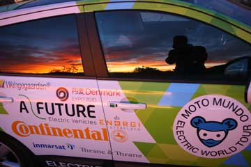
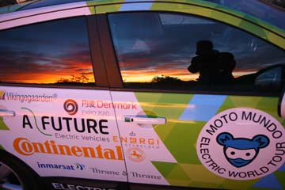
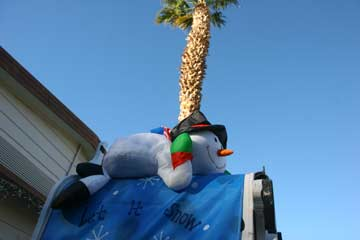
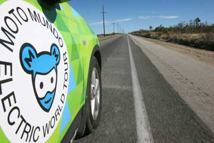
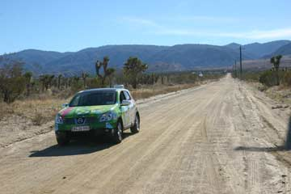
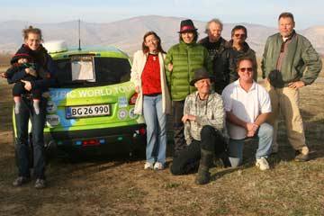
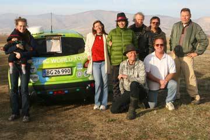

At first light we jumped out of the tents and saw the sun rise on a flaming sky over Phoenix. In this country of spectacular sunrises it was the most impressive. Green Car rolled down the mountain past the tall saguaro cacti. Down into sprawling Phoenix on wide freeways chasing trucks. Most of the land between Phoenix and Tucson is Gila Indian reservation. We stopped to buy food, but all you could get in the only shop in the little town was booze, chips, sweets and soft drinks. It was our good luck to find two big Indian women cooking food on the road. We got tortillas with beans and salad and later found a quiet spot in the desert where we could charge with the generator and have long walk. When the sun dropped a 300 pound police officer pulled up and told us it was illegal to make a stop off the road in the reservation. Also it could be dangerous. We were not far from the Mexican border. It was late in the evening when we arrived at Milagros, a communal eco-housing project just outside Tucson. Only to discover there was no charging for Green Car. Jerry Asher had invited us to the place and he gave us a nice room to sleep. He is a great EV-friend and has gone all over USA in his modified Toyota Prius.
Nina and Hjalte
 

At long last the day arrived when I, Green Car, could start fully charged. Nina, Hjalte, Ida and little Elliot also wanted to be part of a fully charged team, so I drove them down to a truck-stop cafe where they had hearty breakfast. While the East Coast is lashed by snowstorms it is warmer than ever here in Arizona, up to 27 degree C. My dear passengers soaked in a hot spring in the middle of the day while I got a plate of 120 V. Later we all had lunch at Alice's Restaurant (the one from the film) - I got power from an X-mas decoration. Then I could work my way up a mountain to a park just outside Phoenix. It was dark and to be true I was running low on power. But we were all lucky and the ranger gave me a spot with 50 amp power and tall saguaro cacti next to our tents. Thus ended my best power-day in USA.
Greetings - Green Car

At Sam's Family Spa in Desert Hot Springs we enjoyed the basins with the perfectly hot water all the morning. The road into the desert just went down and down. Green Car rolled at very high speed for hours until we reached sea-level. Then we crawled up in the lane for slow trucks. It was dark when we crossed the Colorado-river into Arizona and late when we found an utterly unromantic RV-park between two busy freeways. Here only Snow-birds stayed, pensioners moving south to escape cold winters back home. Power for Green Car was good and in the activity-house we could use a kitchen and heat some canned food. It was not easy to pitch the tents. The ground was as hard as concrete and Hjalte's and my tent had to be tied between the spigot and the car. Ida's tent don't need pegs. We inflated our mattresses and went to bed. The night was cold.
Nina

Green Car had not charged very much when we woke up at Pear Blossom Inn, despite being plugged in all night. 110 V is too weak and too slow, so we started the generator and enjoyed a slow breakfast in the sun outside the room. It was a nice spot with palms and a view of the mountains. We find it hard to understand it is so difficult to find good 220 volt in this country with a mega consumption of power. Everywhere we see air condition, soft drink vending machines, washers, dryers, neonlights, ice machines and so on for ever. And power-lines overhead. But how do we get access to all this power? It is as if it is locked away or diluted. After a late-day charging- and eating-break we continued on the freeways down the mountain and into Los Angeles. A breath-taking ocean of light engulfed us. Ida kept an eye on the GPS and the map as we descended into this crazy city. Late somewhere in a suburb we stopped for power at a gas-station. But we have never in any country got power from a gas-station - and neither did it work here. Again the generator was the answer. We sat in the car and listened to a crime-novel and lost track of the time. We finally arrived at Sam's Family Spa around midnight in Desert Hot Springs. Warm air, quiet, palms and power.
Mike and Debbie had arranged a meeting in the afternoon with the local EV-friends from Electro Auto Association.They were all full of ideas and some had built their own electric cars. The meeting was held in a hangar, the workshop of airplane-, wind-turbine- and EV-constructor Les King. We showed our presentation of the World Tour and Debbie had made a nice meal for all of us. The wind always blows in from the desert over the mountains of Tehachapi. Here began the US wind power-research and here is the General Electric wind turbine factorywhere Mike works. The active people of Tehachapi has over the last decade erected many hundred wind turbines and bigger and bigger ones are being erected.It was late in the afternoon before we could say goodbye. We found a little motel in Pear Blossom north of Los Angeles. It took some persuasion of the host before Hjalte was allowed to plug into an outlet in their laundry-room. It can be difficult to cover long distances in the electric car, not because of the car, it is performing faultlessly, but because the infra-structure is not yet in place.Nina


In agricultural King City we found a tire shop where Green Car could charge. Here people speaks Spanish and the food is delicious Mexican. We had plenty of time and looked at cowboy boots, jeans, belts and hats. If had the money we would have walked out of that shop looking funny. So we only bought a pair of over-alls for Elliot in second-hand shop. Ida loves hot springs and directed us to a spring outside Paso Robles. It was dark when we arrived, the hot water was steaming, acid rock was blaring and a incredible fat man welcomed us. The water was wonderful and a little sauna in a shack was hot. Everything else looked like a junkyard. We were free to camps as we liked and could plug in Green Car. Unfortunately the electricity was weak and we only had 20% power in the morning.


Ida drove 56-60 m/h on the freeway to see how far the car would go - around 1 mile per % charge. But for sure the car has power for much higher speeds. However we conserve power to get maximum range. Again we had to spend time finding plugs in hardware stores - America uses so encredible many different plugs. We also got time to buy bright X-mas-lights and sent a parcel with souvenirs home from Half Moon post office. Lunch was on a high hill with a gorgeous view of the Pacific Ocean. The coastal road curved up and down, eating a lot of power and we got stranded on a dark road. We pulled out the generator and made it to a RV-park. Green Car now got power enough for the rolling houses. 240 Volt!
Hjalte
 
